The original, as published: Tony R. Kuphaldt, Lessons In Industrial Instrumentation, Split-ranging. CC BY 4.0, https://creativecommons.org/licenses/by/4.0/. Imported as published, from https://www.ibiblio.org/kuphaldt/socratic/sinst/book/liii.pdf https://www.ibiblio.org/kuphaldt/socratic/sinst/book/liii.pdf
There are many process control applications in industry where it is desirable to have multiple control valves respond to the output of a common controller. Control valves configured to follow the command of the same controller are said to be split-ranged, or sequenced. Split-ranged control valves may take different forms of sequencing. A few different modes of control valve sequencing are commonly seen in industry: complementary, exclusive, and progressive21.
20Prior to the advent of motor-actuated valves, practically all shutoffvalves in industrial facilities were manually operated. While this is an inconvenience for operations personnel, it did carry one advantage: the human operators tasked with closing these valves by hand could feel how each valve seated. The amount of effort and the onset of closing torque sensed while turning the valve handle shut gave operators tactile feedback on the condition of each valve seat. Motor-powered valve actuators eliminated the need for this routine manual labor, but also eliminated the routine collection of this valuable diagnostic information. Modern electric valve actuators now provide the best of both worlds: convenient and fast valve operation with accurate self-diagnostic assessment of valve seating. 21I have searched in vain for standardized names to categorize different forms of control valve sequencing. The names “complementary,” “exclusive,” and “progressive” are my own invention. If I have missed someone else’s categorization of split-ranging in my research, I sincerely apologize.
The first type of control valve sequencing is a mode where two valves serve to proportion a mixture of two fluid streams, such as this example where base and pigment liquids are mixed together to form colored paint:
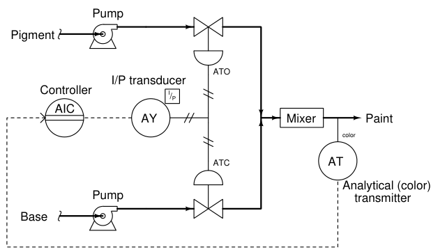
Both base and pigment valves operate from the same 3 to 15 PSI pneumatic signal output by the I/P transducer (AY), but one of the valves is Air-To-Open while the other is Air-To-Close. The following table shows the relationship between valve opening for each control valve and the controller’s output:
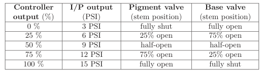
An alternative expression for this split-range valve behavior is a graph showing each valve opening as a colored stripe of varying width (wider representing further open). For this particular mode of split-ranging, the graph would look like this:
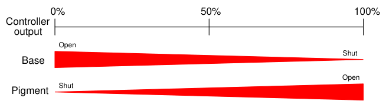
With this form of split-ranging, there is never a condition in the controller’s output range where both valves are fully open or fully shut. Rather, each valve complements the other’s position22. An alternative to complementary valve sequencing in a process where two fluid streams mix (or diverge) is to use one three-way valve23 rather than a pair of two-way valves:
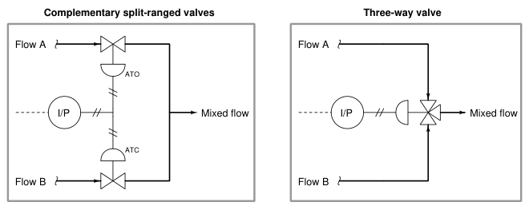
22In mathematics, a “complement” is a value whose sum with another quantity always results in a fixed total. Complementary angles, for instance, always add to 90o (a right angle). 23Also known as a mixing valve or a diverting valve, depending on how it is applied to process service.
A photograph of a three-way globe valve mixing hot and cold water to control temperature is shown here:
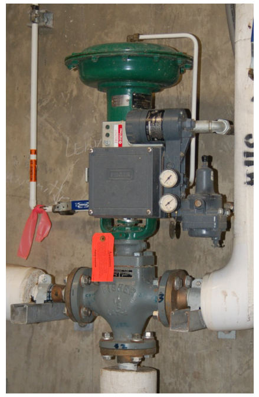
Other applications for split-ranged control valves call for a form of valve sequencing where both valves are fully closed at a 50% controller output signal, with one valve opening fully as the controller output drives toward 100% and the other valve opening fully as the controller output goes to 0%. The nature of this valve sequencing is to have an “either-or” throttled path for process fluid. That is, either process fluid flows through one valve or through the other, but never through both at the same time. A practical example of this form of split-ranging is reagent feed for a pH neutralization process, where the pH value of process liquid is brought closer to neutral by the addition of either acid or caustic reagent liquids:
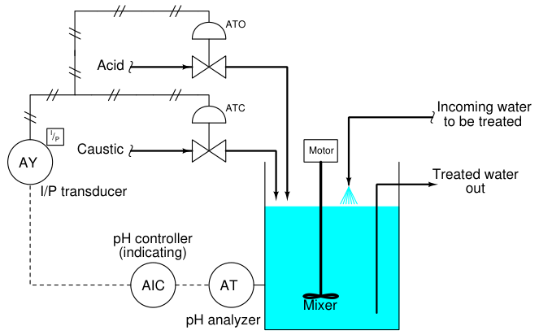
Here, a pH analyzer monitors the pH value of the liquid solution and a single pH controller commands two reagent valves to open when needed. If the process pH begins to increase, the controller output signal increases as well (direct action) to open up the acid valve. The addition of acid to the mixture will have the effect of lowering the mixture’s pH value. Conversely, if the process pH begins to decrease, the controller output signal will decrease as well, closing the acid valve and then opening the caustic valve. The addition of caustic to the mixture will have the effect of raising the mixture’s pH value.
Both reagent control valves operate from the same 3 to 15 PSI pneumatic signal output by the I/P transducer (AY), but the two valves’ calibrated ranges are not the same. The Air-To-Open acid valve has an operating range of 9 to 15 PSI, while the Air-To-Close caustic valve has an operating range of 9 to 3 PSI. The following table shows the relationship between valve opening for each control valve and the controller’s output:
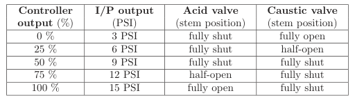
Again, we may express the two valves’ exclusive relationship in the form of a graph, with colored stripes representing valve opening:
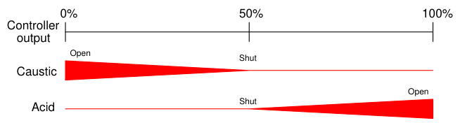
Exclusive-sequenced control valves are used in applications where it would be undesirable to have both valves open simultaneously. In the example given of a pH neutralization process, the goal here is for the controller to add either acid reagent or caustic reagent to “push” the pH value either direction as needed. However, simultaneously adding both acid and caustic to the process would be wasteful, as one reagent would simply neutralize the other with no benefit to the process liquid itself.
A third form of control valve sequencing is used to expand the operating range of flow control for some fluid beyond that which a single control valve could muster. Once again pH control provides a suitable example to illustrate an application of this form of sequencing. pH is an especially challenging application of process control because the dynamic range of the process is enormous. Each unit of pH value change represents a ten-fold change in hydrogen ion concentration within the process liquid. This means the difference in ion concentration between a process liquid having a value of 10 pH and a process liquid having a value of 7 pH (a pH difference of 3) is a factor of one thousand (103)! Consequently, the flow rate of reagent necessary to neutralize a process liquid stream may vary widely. It is quite possible that a control valve sized to throttle minimum flow will simply be too small to meet the demands of high flow when needed. Yet, a control valve sized large enough to meet the maximum flow rate may be too large to precisely “turn down” when just a trickle of reagent is needed. This same general control problem was encountered by automotive engineers in the days when carburetors were used to mix gasoline with air prior to combustion in an engine. A carburetor is a mechanical air flow control device using a “butterfly” valve element to throttle air flow into the engine, and a venturi element producing vacuum to aspirate fuel droplets into the air stream to create an air-fuel mixture. A carburetor with a butterfly valve and flow tube sized to idle well and respond to the needs of in-town driving would not flow enough air to provide good high-speed performance. Conversely, a large carburetor suitable for driving at racing speeds would offer poor control at lowspeed and idling operation. Their solution to this problem was the progressive carburetor, having two butterfly valves to throttle the flow of air into the engine. One butterfly valve passed low amounts of air flow only, while a larger butterfly valve opened up only when the accelerator pedal was nearly at its maximum position. The combination of two differently-sized butterfly valves – progressively opened – gave drivers the best of both worlds. Now, an automobile engine could perform well both at low power levels and at high power levels. On a fundamental level, the problem faced in pH control as well as by early automotive engineers is the same thing: insufficient rangeability. Some processes demand a greater range of control than any single valve can deliver, and it is within these processes that a pair of progressively-sequenced control valves is a valid solution.
Applying this solution to a pH control process where the incoming liquid always has a high pH value, and must be neutralized with acid:
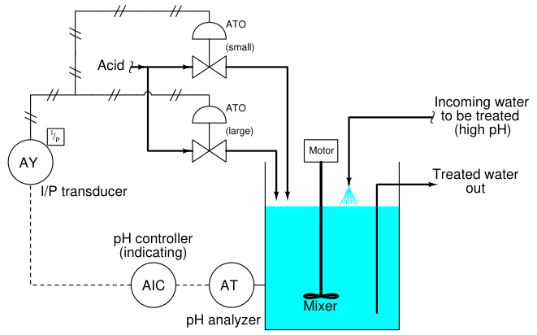
Proper sequencing of the small and large acid control valves is shown in the table and the graph:
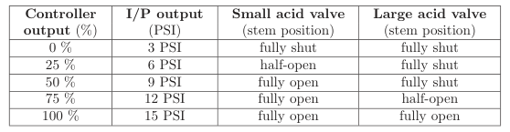
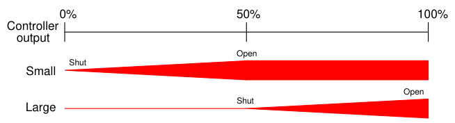
With the two acid control valves sequenced progressively, the control system will have significantly more rangeability necessary to regulate pH under widely varying process conditions.
A photograph showing a pair of progressively sequenced control valves used to control boiler feedwater to the high-pressure (“HP”) drum on a large power boiler is shown here:
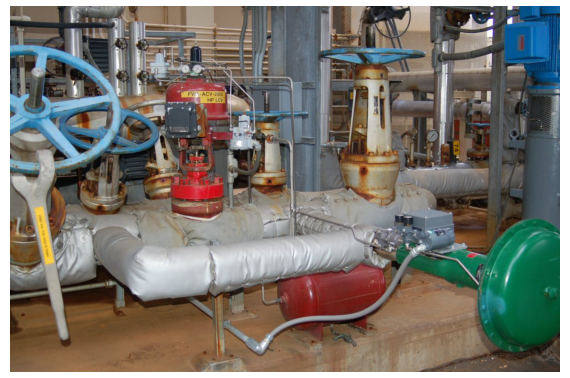
One small control valve (horizontal, with a green actuator) is the first to open from 4 to 12 mA. A larger control valve (vertical, with a red actuator) is the next to open from 12 mA to 20 mA. Under normal (full-power) operating conditions, the green valve is wide-open while the larger red valve throttles feedwater to the steam drum. When the boiler is operating in standby (low-power) mode, the red valve is shut while the smaller green valve throttles feedwater to the steam drum. The combination of these two control valves provides better steam drum level control over the boiler’s full range of operation than any single control valve could do alone.